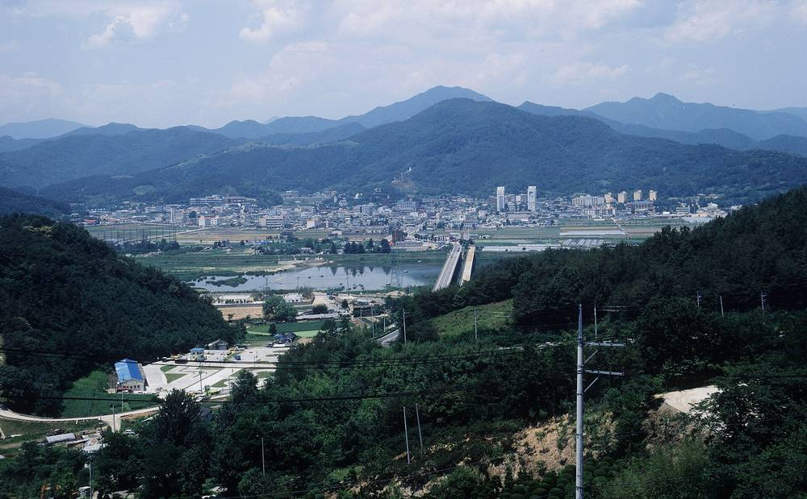

한 필지에 태양광 두 개 따로 허가…합치면 2.3MW인데 '2MW 초과' 주변지역 지원은 비켜가나, 고령 대가야읍 주민 반발

대가야읍 본관리 같은 필지에 1.3MW·1.0MW 개별 허가…"용량 나눠 법정 지원 대상에서 빠질 수 있다" 지적, 고령군 "법인 다르고 시설 따로 갖추면 계통 연계 막기 어려워"
경북 고령군 대가야읍 본관리의 같은 필지에 1.3MW와 1.0MW 규모의 태양광 발전시설이 각각 따로 허가를 받으면서, 두 시설을 합친 2.3MW라면 받을 수 있는 발전소 주변지역 지원에서 마을이 빠질 수 있다는 지적과 함께 주민들이 반발하고 있다. '발전소주변지역 지원에 관한 법률'은 일정 규모가 넘는 발전시설 주변 지역에 주민 복지와 소득증대를 위한 지원사업을 하도록 하는데, 태양광은 용량이 2MW를 넘느냐가 지원 대상을 가르는 주요 기준이고 대상이 되는 10MW 이하 발전소에는 연간 기본지원사업비 최저한도 2,000만 원이 적용되는 것으로 알려졌다. 두 시설을 한 발전소로 보면 기준을 넘지만 별개 발전소로 보면 둘 다 기준에 못 미쳐, 같은 규모의 설비가 들어서도 허가를 어떻게 받느냐에 따라 마을에 돌아가는 몫이 달라지는 셈이다. 같은 군 운수면 운산리와 봉평리에는 2016년 허가를 받아 2023년부터 돌아가는 2.5MW·2MW 태양광이 있으며, 이 마을들에는 해마다 약 2,000만 원의 지원금이 나가는 것으로 알려졌다. 주민들은 경관과 생활환경 피해는 그대로 떠안는데 마을 혜택은 없다며 반발하지만, 고령군은 서로 다른 법인이 신청하고 시설 경계와 배수시설을 따로 갖췄다면 나눠 신청했다는 이유만으로 "전력계통 연계를 제한하기 어렵다"(박진호 지역경제실 에너지팀장)는 입장이다. 고령군에서 이처럼 전체 용량은 기준을 넘는데 시설을 기준 아래로 나눠 허가받는 사례가 늘고 있다는 지적 속에, 같은 필지나 붙은 부지에 여러 시설이 들어설 때는 실제 사업주체와 전체 용량을 함께 따지도록 제도를 고쳐야 한다는 목소리가 나오며, 사업자 쪽 입장은 알려지지 않았다.
시민에너지 관점
독일 재생에너지법(EEG)은 같은 부지나 바로 가까운 곳에 같은 종류의 설비가 12개월 안에 잇따라 들어서면 소유자가 달라도 하나의 설비로 묶어 지원 기준 용량을 따지도록 해, 설비를 쪼개 문턱을 피하는 길을 법에서 막아 두었다. 합산 기준을 두면 작은 태양광까지 묶여 위축된다는 걱정이 나올 수 있지만, 같은 필지·같은 시기라는 조건을 붙이면 진짜 소규모 사업과 용량 나누기를 충분히 가를 수 있다. 더 근본적으로는 주민을 지원금을 받는 이웃으로만 두는 구조가 문턱을 둘러싼 숨바꼭질을 낳는 것이며, 주민이 처음부터 지분과 결정권을 갖는 사업이라면 용량을 쪼갤 까닭이 사라진다. 정부와 국회는 같은 필지와 붙은 부지의 발전시설 용량을 합산하는 기준을 서둘러 마련하고, 지자체는 허가 단계에서 실제 사업주체를 밝히고 주민 참여 방안을 함께 묻는 절차를 갖춰야 한다.
출처: 영남일보 2026-11-04 석현철 원문 보기
창간 전 시험 발행 기사입니다.
1つの筆地に太陽光2基を別々に許可…合わせれば2.3MWなのに「2MW超」の周辺地域支援を免れるのか、韓国・高霊郡大伽耶邑の住民が反発
大伽耶邑本館里の同じ筆地に1.3MW・1.0MWを個別に許可…「容量を分けて法定支援の対象から外れかねない」との指摘、高霊郡「法人が異なり施設を別々に備えれば系統連系は拒みにくい」
慶尚北道高霊（コリョン）郡大伽耶（テガヤ）邑本館里の同じ筆地（土地区画）で、1.3MWと1.0MWの太陽光発電施設がそれぞれ別々に許可を受けたことから、2つを合わせた2.3MWであれば受けられるはずの発電所周辺地域支援から集落が外れかねないとの指摘が出ており、住民が反発している。「発電所周辺地域支援に関する法律」は一定規模を超える発電施設の周辺地域で住民の福祉や所得向上のための支援事業を行うよう定めており、太陽光は容量が2MWを超えるかどうかが支援対象を分ける主な基準で、対象となる10MW以下の発電所には年間の基本支援事業費の最低限度2,000万ウォンが適用されるとされる。2つの施設を1つの発電所とみれば基準を超えるが、別々の発電所とみればどちらも基準に届かず、同じ規模の設備が建っても許可の受け方次第で集落に回る分が変わることになる。同じ郡の雲水面雲山里と鳳坪里には2016年に許可を受け2023年から稼働している2.5MW・2MWの太陽光があり、これらの集落には毎年約2,000万ウォンの支援金が支払われているとされる。住民は景観や生活環境への影響はそのまま背負うのに集落への恩恵はないと反発しているが、高霊郡は、異なる法人が申請し、施設の境界や排水施設を別々に備えていれば、分割申請だという理由だけで「電力系統への連系を制限するのは難しい」（パク・ジンホ地域経済室エネルギーチーム長）との立場だ。高霊郡では全体の容量は基準を超えながら施設を基準以下に分けて許可を受ける例が増えているとの指摘があり、同じ筆地や隣接地に複数の施設が建つ場合は実際の事業主体と全体の容量をあわせて判断するよう制度を改めるべきだとの声が上がっている。事業者側の立場は明らかになっていない。
市民エネルギーの視点
ドイツの再生可能エネルギー法（EEG）は、同じ敷地やすぐ近くに同じ種類の設備が12か月以内に相次いで設置された場合、所有者が異なっても1つの設備とみなして支援基準の容量を判断するよう定め、設備を分割して基準を逃れる道を法律でふさいでいる。合算基準を設ければ小さな太陽光まで束ねられて萎縮するとの懸念もあり得るが、同じ筆地・同じ時期という条件を付ければ、本当の小規模事業と容量の分割は十分に見分けられる。より根本的には、住民を支援金を受け取る隣人としてだけ扱う仕組みが基準をめぐるいたちごっこを生んでいるのであり、住民が最初から持ち分と決定権を持つ事業であれば容量を分ける理由はなくなる。政府と国会は同じ筆地や隣接地の発電施設の容量を合算する基準を急いで設け、自治体は許可の段階で実際の事業主体を明らかにし、住民参加の方法もあわせて問う手続きを整えるべきだ。
出典: 嶺南日報 2026-11-04 ソク・ヒョンチョル 原文を読む
創刊前の試験発行記事です。
同一地块上两座光伏分别获批…合计2.3MW却绕开“超过2MW”的周边地区扶持？韩国高灵郡大伽倻邑居民不满
大伽倻邑本馆里同一地块分别批准1.3MW和1.0MW…有人指出“拆分容量可能被排除在法定扶持之外”，高灵郡称“法人不同、设施分开配置的，难以拒绝并网”
韩国庆尚北道高灵郡大伽倻邑本馆里的同一地块上，1.3MW和1.0MW两座太阳能发电设施分别获得许可，有人指出，若两者合计为2.3MW本可获得的电站周边地区扶持可能因此落空，当地居民表示不满。《电站周边地区扶持法》规定，对一定规模以上发电设施的周边地区实施改善居民福利、增加收入的扶持项目；据悉，太阳能以容量是否超过2MW作为划分扶持对象的主要标准，属于扶持对象的10MW以下电站每年适用2,000万韩元的基本扶持项目经费最低额度。如果把两座设施视为一座电站，就超过了标准；如果视为两座独立电站，则都达不到标准，也就是说，同样规模的设施，村庄能得到多少全看许可怎么办。同一郡云水面云山里和凤坪里有2016年获批、2023年起运行的2.5MW和2MW太阳能设施，据悉这些村庄每年可获得约2,000万韩元扶持金。居民们表示，景观和生活环境受到的影响全由自己承担，村里却得不到任何好处；高灵郡则表示，如果由不同法人申请，且各设施的边界和排水设施独立配置，仅以拆分申请为由“难以限制接入电网”（地区经济室能源组组长朴镇浩）。有人指出，高灵郡总容量超过标准、却把设施拆成标准以下分别报批的情况正在增多，并呼吁修改制度，在同一地块或相邻地块建设多座设施时，应综合考虑实际项目主体和总容量。项目方的立场尚未公开。
市民能源视角
德国《可再生能源法》（EEG）规定，同类设施若在12个月内相继建在同一地块或紧邻位置，即使所有者不同，也视为一座设施来确定扶持标准容量，从法律上堵住了拆分设施规避门槛的路。有人可能担心，设定合并计算标准会把小型光伏也捆在一起、抑制其发展，但只要附上“同一地块、同一时期”的条件，就足以区分真正的小型项目和拆分容量的做法。更根本的问题在于，只把居民当作领取扶持金的邻居，这种结构本身就会引发围绕门槛的“捉迷藏”；如果居民从一开始就拥有股份和决定权，就没有理由拆分容量。政府和国会应尽快制定合并计算同一地块及相邻地块发电设施容量的标准，地方政府则应在许可阶段公开实际项目主体，并建立同时征询居民参与方式的程序。
来源: 岭南日报 2026-11-04 Seok Hyeon-cheol 查看原文
本文为创刊前试发行文章。
Two solar plants permitted separately on one plot in Goryeong total 2.3 MW but may slip under the 2 MW threshold for host-community support, angering villagers
Separate permits for 1.3 MW and 1.0 MW on the same plot in Bongwan-ri, Daegaya-eup, raise concerns that splitting capacity could exclude the village from statutory support; county says it is hard to refuse grid connection when different companies apply with separate facilities
Two solar plants of 1.3 MW and 1.0 MW have each received separate permits on the same plot of land in Bongwan-ri, Daegaya-eup, Goryeong County, North Gyeongsang Province, prompting concerns that the village could miss out on the host-community support it would be entitled to if the two were counted together as 2.3 MW, and residents are protesting. Korea's Act on Assistance to Electric Power Plant-Neighboring Areas requires support programmes for residents' welfare and income in areas around generating facilities above a certain size; for solar, whether capacity exceeds 2 MW is reportedly a key test for eligibility, and eligible plants of 10 MW or less are subject to a minimum basic support budget of 20 million won a year. Treated as one plant, the two facilities would clear the threshold, but treated as separate plants neither does, meaning the same amount of equipment can bring a village different benefits depending on how the permits are obtained. Elsewhere in the county, in Unsan-ri and Bongpyeong-ri in Unsu-myeon, solar plants of 2.5 MW and 2 MW permitted in 2016 and running since 2023 reportedly bring those villages about 20 million won in support each year. Residents say they bear the impact on the landscape and their living environment with nothing in return for the village, but the county's position is that when different companies apply and each facility has its own boundaries and drainage, it is "difficult to restrict grid connection" merely because an application was split, according to Park Jin-ho, head of the energy team in the county's local economy office. Amid reports that such cases, in which total capacity exceeds the threshold but facilities are permitted in smaller pieces, are increasing in Goryeong, there are calls to revise the rules so that the actual developer and total capacity are considered when several facilities go up on the same or adjacent plots; the developers' position has not been reported.
Citizen Energy View
Germany's Renewable Energy Sources Act (EEG) treats installations of the same type built on the same site or in immediate proximity within 12 months as a single installation when determining support thresholds, regardless of who owns them, closing off by law the route of splitting projects to dodge the threshold. Some may worry that aggregation rules would sweep in small solar projects and discourage them, but conditions such as the same plot and the same period are enough to tell genuine small projects apart from split capacity. More fundamentally, it is a structure that treats residents only as neighbours receiving support payments that invites this game of hide-and-seek around thresholds; where residents hold a stake and a say from the start, there is no reason to split capacity. The government and the National Assembly should quickly set rules for adding up the capacity of plants on the same or adjacent plots, and local governments should disclose the actual developer at the permitting stage and build in a procedure that also asks how residents can take part.
Source: Yeongnam Ilbo 2026-11-04 Seok Hyeon-cheol Read the original
This article was published during the trial period before launch.